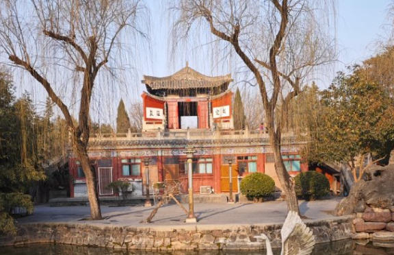
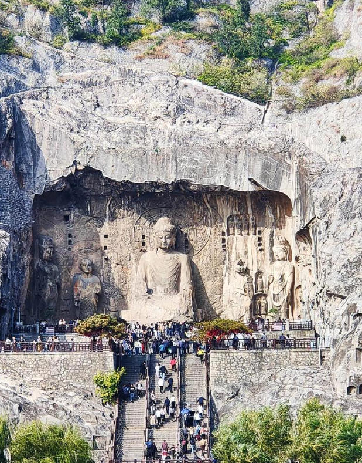
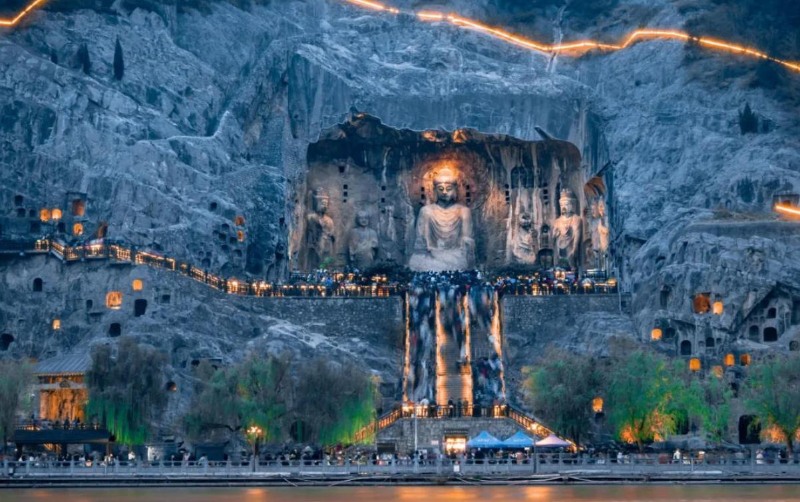
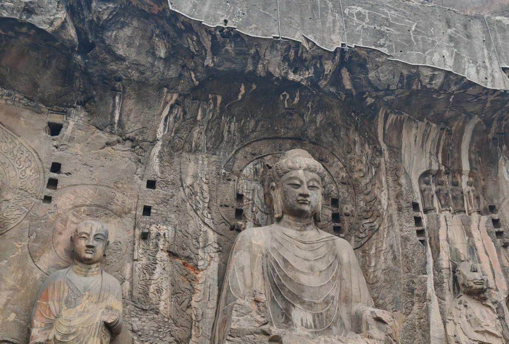
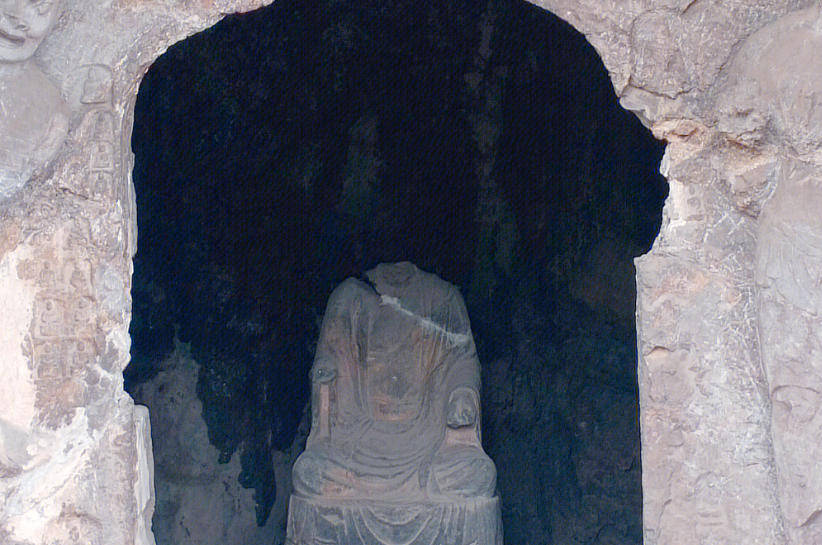
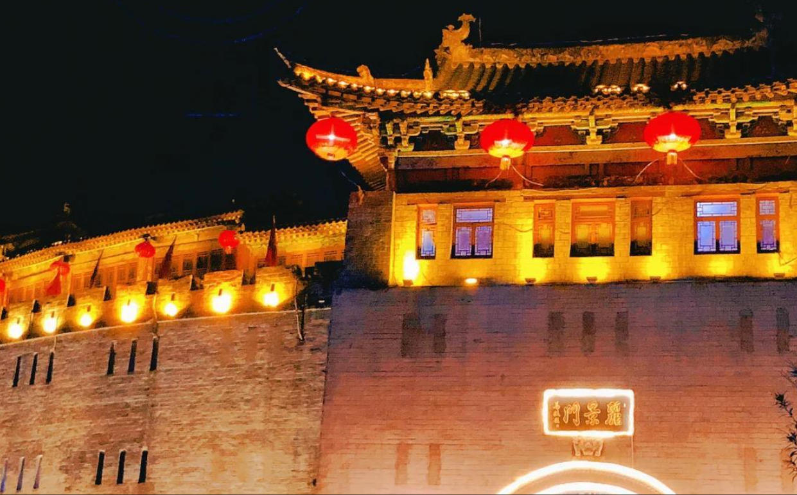
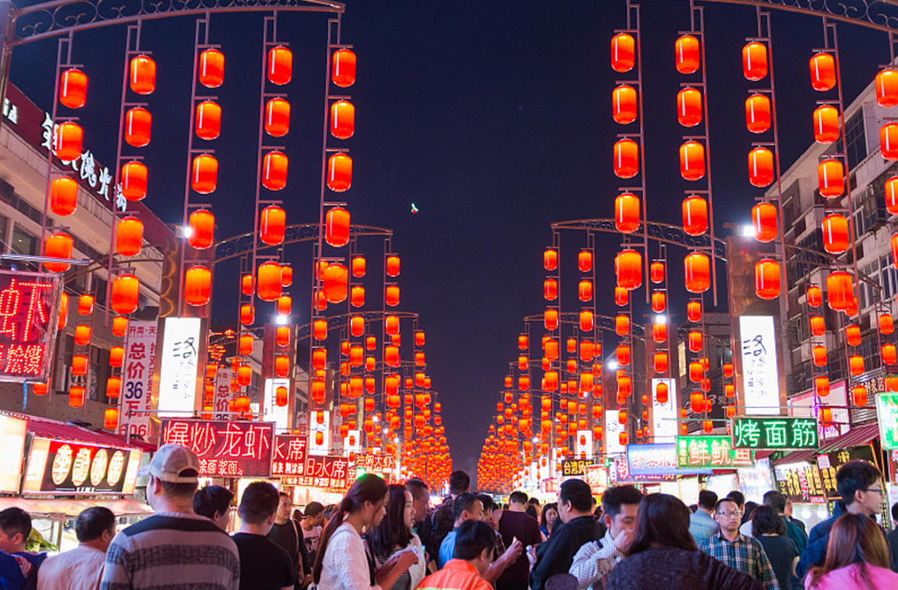
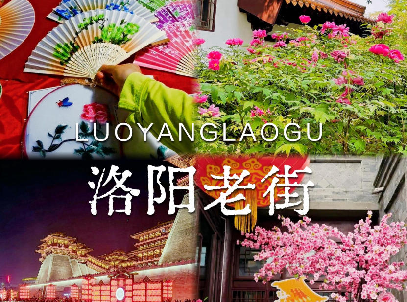
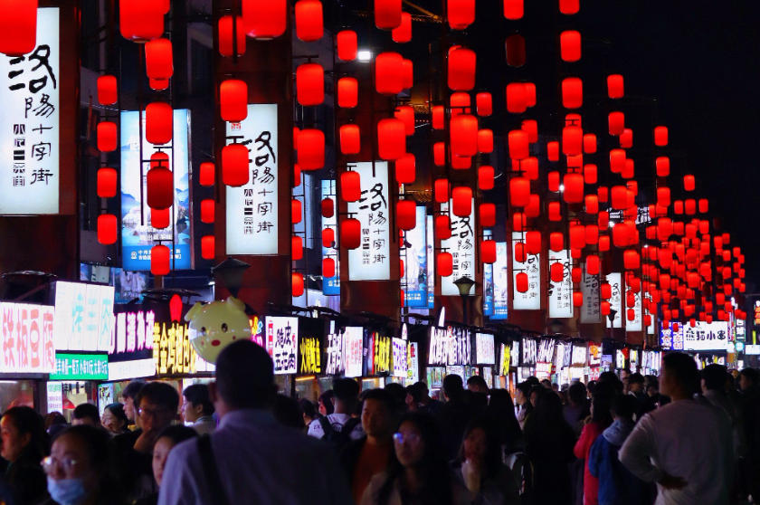

-
 0379-8888-8888
0379-8888-8888
- |
- Luoyang Tourism
0379-8888-8888


Luoyang, located in the heart of Henan Province along the Yellow River, is one of China's Four Great Ancient Capitals. With a history spanning over 4,000 years and serving as the capital for 13 dynasties, it is a city where emperors ruled and civilizations flourished. The legendary Longmen Grottoes, a UNESCO World Heritage Site, house over 100,000 Buddhist statues carved into limestone cliffs, while the White Horse Temple stands as the cradle of Chinese Buddhism. Each spring, the city transforms into a sea of color as millions of peonies bloom across its gardens, celebrating Luoyang's 1,500-year tradition as the "Peony Capital of the World."

Longmen GrottoesOne of China's greatest treasure houses of Buddhist art, the Longmen Grottoes contain over 2,300 caves and niches, 100,000 statues, and 2,800 inscriptions carved into the cliffs along the Yi River. A UNESCO World Heritage Site since 2000, it represents the pinnacle of stone carving from the Northern Wei to Tang dynasties, including the colossal 17-meter Vairocana Buddha.

White Horse TempleFounded in 68 AD during the Eastern Han Dynasty, the White Horse Temple is recognized as the cradle of Chinese Buddhism. It was here that the first Buddhist scriptures were translated into Chinese. The temple complex includes majestic halls, ancient pagodas, and the Qiyu Pagoda built in the 12th century, surrounded by serene gardens.

Luoyang MuseumOne of China's finest regional museums, housing over 400,000 cultural relics including the magnificent Five Thousand Piece Tomb figurines, ancient bronze ware from the Erlitou site, and exquisite Tang Dynasty gold and silver artifacts that showcase Luoyang's glorious past as the imperial capital.
A UNESCO World Heritage Site with over 100,000 Buddhist statues carved into limestone cliffs spanning 1,000 years.
The cradle of Chinese Buddhism, founded in 68 AD, the first Buddhist temple ever built on Chinese soil.
Housing over 400,000 relics from 13 dynasties, showcasing the city's magnificent imperial heritage.

The historic ancient district with traditional architecture, street food, and the iconic Lijing Gate tower.

For 1,500 years, Luoyang has been celebrated as the "Peony Capital," hosting the annual Peony Festival that draws millions of visitors each April.

As capital of 13 dynasties including Han, Sui, and Tang, Luoyang preserves a wealth of palaces, tombs, and ancient urban planning.

The origin of Chinese civilization, where the Yellow River and Luo River meet, giving birth to the legendary Hetu and Luoshu diagrams.

Luoyang was the Eastern Capital of the Tang Dynasty, renowned for its grand palaces, prosperous Silk Road trade, and cultural golden age.

A national forest park at 2,211 meters, offering cool summers, pristine forests, waterfalls, and stunning alpine landscapes.

The mother river of China flows through Luoyang, creating dramatic gorges and the spectacular Xiaolangdi Dam area.

A hidden gem featuring emerald pools, cascading waterfalls, and lush green valleys perfect for hiking and nature photography.

A breathtaking birch forest that turns golden in autumn, creating a magical landscape of white trunks and golden leaves.